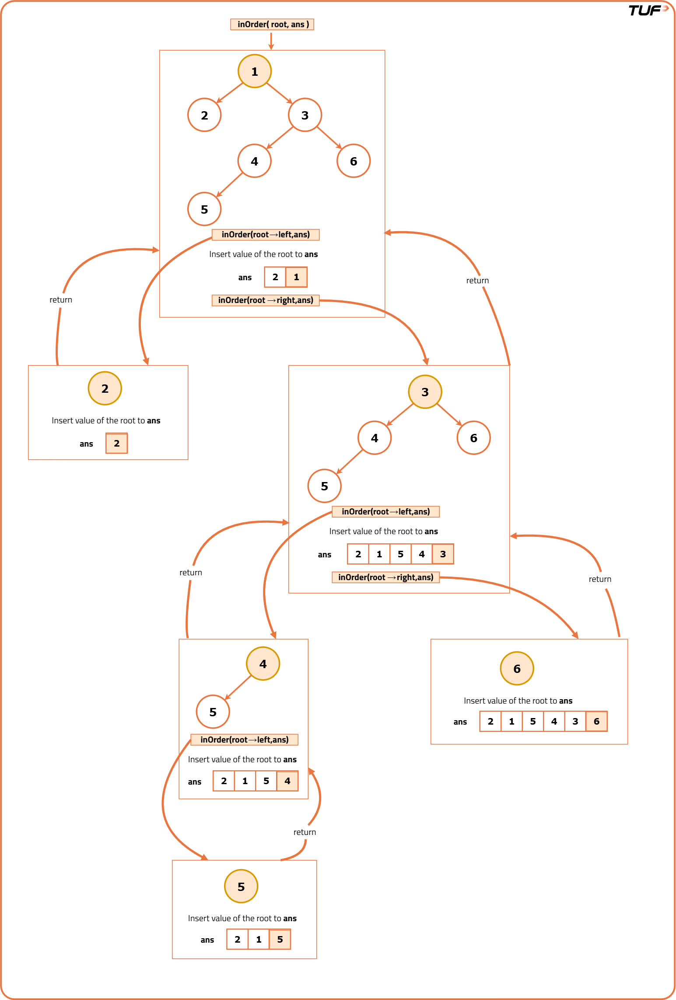
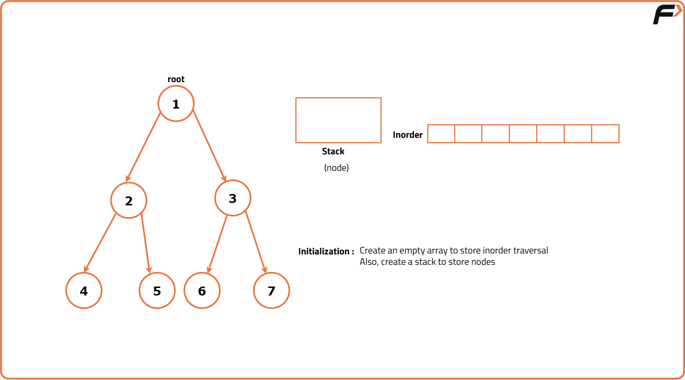
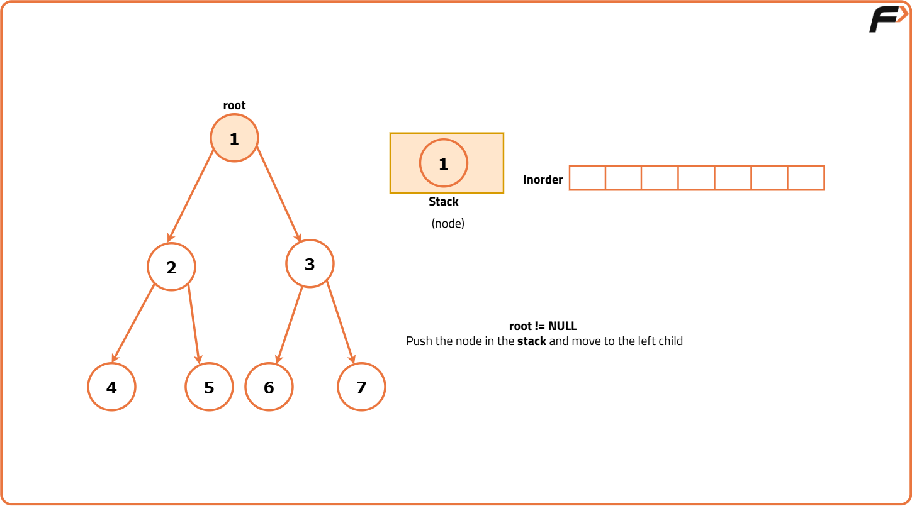
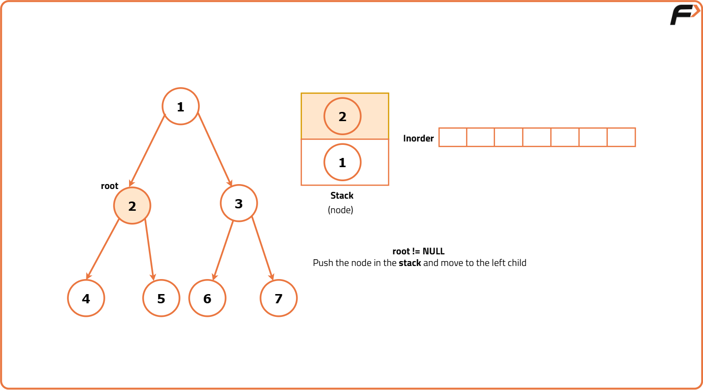
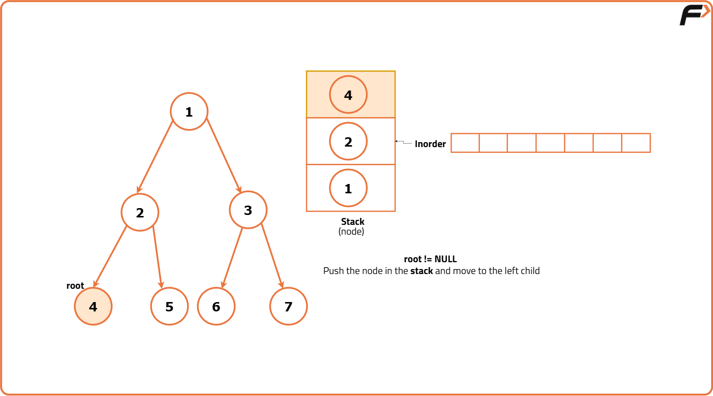
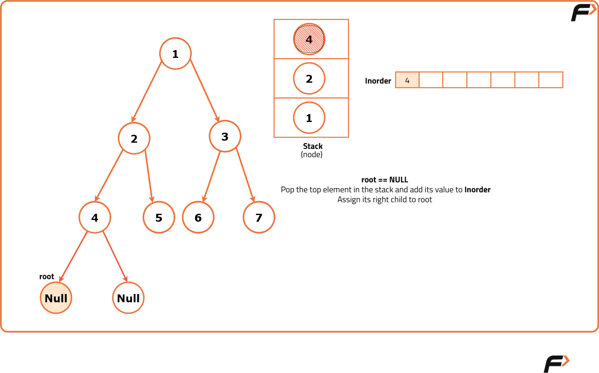
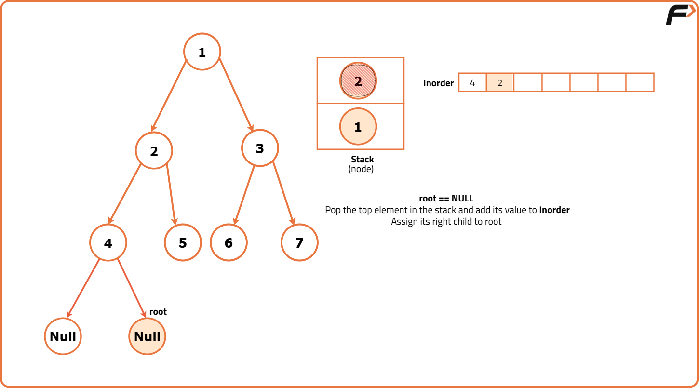
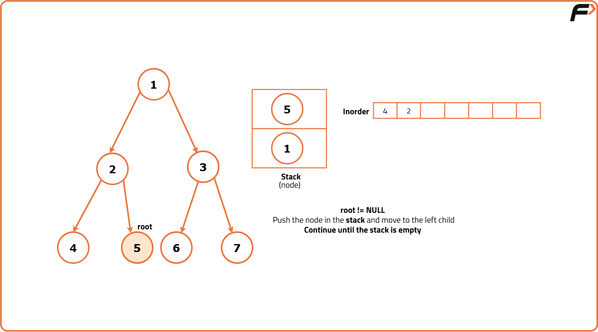
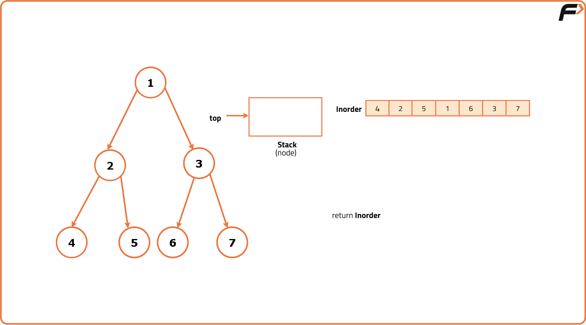

Inorder Traversal of Binary Tree
Problem Statement: Given root of binary tree, return the Inorder traversal of the binary tree.
Examples
Example 1: Input: root = [1, 4, null, 4, 2] Output: [4, 4, 2, 1] Explanation: In this example, the preorder traversal of the binary tree produces the sequence [4, 4, 2, 1]. Example 2: Input: root = [1, null, 2, 3] Output: [1, 3, 2] Explanation: The preorder traversal of the binary tree results in the sequence [1, 3, 2].
Disclaimer: Here is the practice link to help you assess your knowledge better. It's highly recommend trying to solve it before looking at the solution.
Recursive Approach
Algorithm
- Base Case: If the current node is null, it indicates we've reached the end of a subtree with no further nodes to explore, so the recursive function stops and returns from that call.
- Recursive Function:
- Traverse Left Subtree: Recursively call the inorder function on the left child of the current node, exploring the left subtree first in a depth-first manner.
- Process Current Node: Once the left subtree is fully explored, the current node is processed (e.g., adding its value to an array or printing it).
- Traverse Right Subtree: After processing the current node, recursively explore the right subtree by invoking the inorder function on the right child of the current node.

Code
#include <bits/stdc++.h>
using namespace std;
// TreeNode structure for the binary tree
struct TreeNode {
int data;
TreeNode* left;
TreeNode* right;
// Constructor to initialize
// the TreeNode with a value
TreeNode(int val) : data(val), left(nullptr), right(nullptr) {}
};
class Solution{
private:
// Function to perform inorder traversal
// of the tree and store values in 'arr'
void recursiveInorder(TreeNode* root, vector<int> &arr){
// If the current Tree is NULL
// (base case for recursion), return
if(root == nullptr){
return;
}
// Recursively traverse the left subtree
recursiveInorder(root->left, arr);
// Push the current TreeNode's
// value into the vector
arr.push_back(root->data);
// Recursively traverse
// the right subtree
recursiveInorder(root->right, arr);
}
public:
// Function to initiate inorder traversal
// and return the resulting vector
vector<int> inorder(TreeNode* root){
// Create an empty vector to
// store inorder traversal values
vector<int> arr;
// Call the inorder traversal function
recursiveInorder(root, arr);
// Return the resulting vector
// containing inorder traversal values
return arr;
}
};
// Main function
int main()
{
// Creating a sample binary tree
TreeNode* root = new TreeNode(1);
root->left = new TreeNode(2);
root->right = new TreeNode(3);
root->left->left = new TreeNode(4);
root->left->right = new TreeNode(5);
Solution sol = Solution();
// Getting inorder traversal
vector<int> result = sol.inorder(root);
// Displaying the inorder traversal result
cout << "Inorder Traversal: ";
// Output each value in the
// inorder traversal result
for(int val : result) {
cout << val << " ";
}
cout << endl;
return 0;
}
Complexity Analysis
Time Complexity: O(N), where N is the number of nodes in the binary tree. Each node is visited exactly once during the traversal.
Space Complexity: O(N), where N is the number of nodes in the binary tree. The space is used for the recursion stack and the vector to store the inorder traversal result.
Iterateive Approach
Algorithm
- Initialize an empty stack and set the current node to the root of the binary tree.
- Enter a loop that continues as long as there are nodes in the stack or the current node is not null.
- If the current node is not null, push it onto the stack and move to its left child. Continue this process until a node with no left child is reached.
- Once a null node is encountered, pop the top node from the stack, process it (e.g., add its value to the result array), and move to its right child.
- Repeat this process of pushing and popping nodes, alternating between moving left and right, until the stack is empty and the current node is null.
- At the end of the process, return the result array, which will contain the inorder traversal of the binary tree.








Code
#include <bits/stdc++.h>
using namespace std;
// Define the TreeNode structure
struct TreeNode {
int data;
TreeNode* left;
TreeNode* right;
TreeNode(int x) : data(x), left(nullptr), right(nullptr) {}
};
class Solution {
public:
// Function to perform inorder traversal
// of a binary tree iteratively
vector<int> inorder(TreeNode* root){
// Initialize a stack to track nodes
stack<TreeNode*> st;
// Start from the root node
TreeNode* node = root;
// Initialize a vector to store
// inorder traversal result
vector<int> inorder;
// Start an infinite
// loop for traversal
while(true){
// If the current node is not NULL
if(node != NULL){
// Push the current
// node to the stack
st.push(node);
// Move to the left child
// of the current node
node = node->left;
}
else{
// If the stack is empty,
// break the loop
if(st.empty()){
break;
}
// Retrieve a node from the stack
node = st.top();
// Remove the node from the stack
st.pop();
// Add the node's value to
// the inorder traversal list
inorder.push_back(node->data);
// Move to the right child
// of the current node
node = node->right;
}
}
// Return the inorder
// traversal result
return inorder;
}
};
int main() {
// Creating a binary tree
TreeNode* root = new TreeNode(1);
root->left = new TreeNode(2);
root->right = new TreeNode(3);
root->left->left = new TreeNode(4);
root->left->right = new TreeNode(5);
// Initializing the Solution class
Solution sol;
// Getting the inorder traversal
vector<int> result = sol.inorder(root);
// Displaying the inorder traversal result
cout << "Inorder Traversal: ";
for (int val : result) {
cout << val << " ";
}
cout << endl;
return 0;
}
Complexity Analysis
Time Complexity: O(n), where n is the number of nodes in the binary tree. Each node is visited exactly once.
Space Complexity: O(h), where h is the height of the binary tree. This is the space required for the stack to store the nodes during traversal.